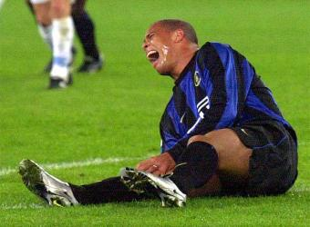
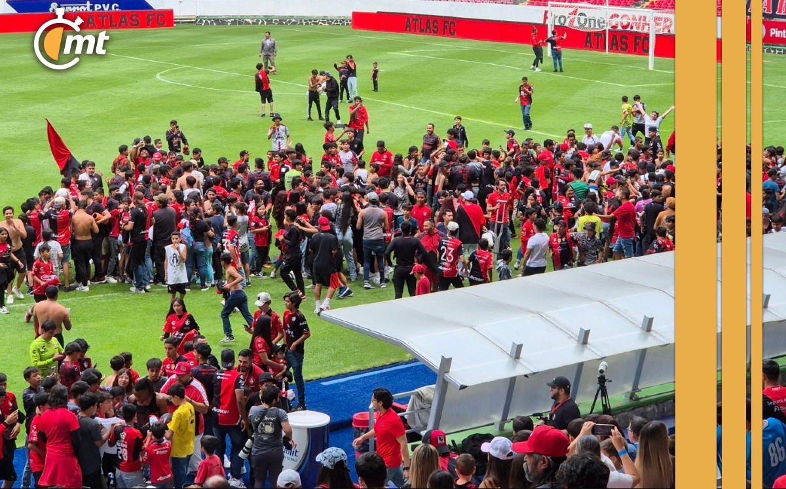
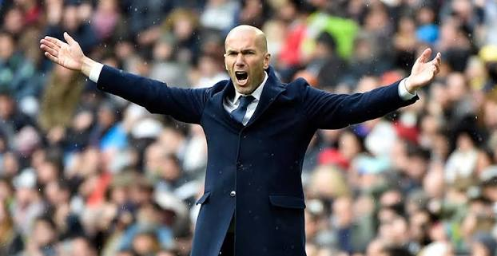
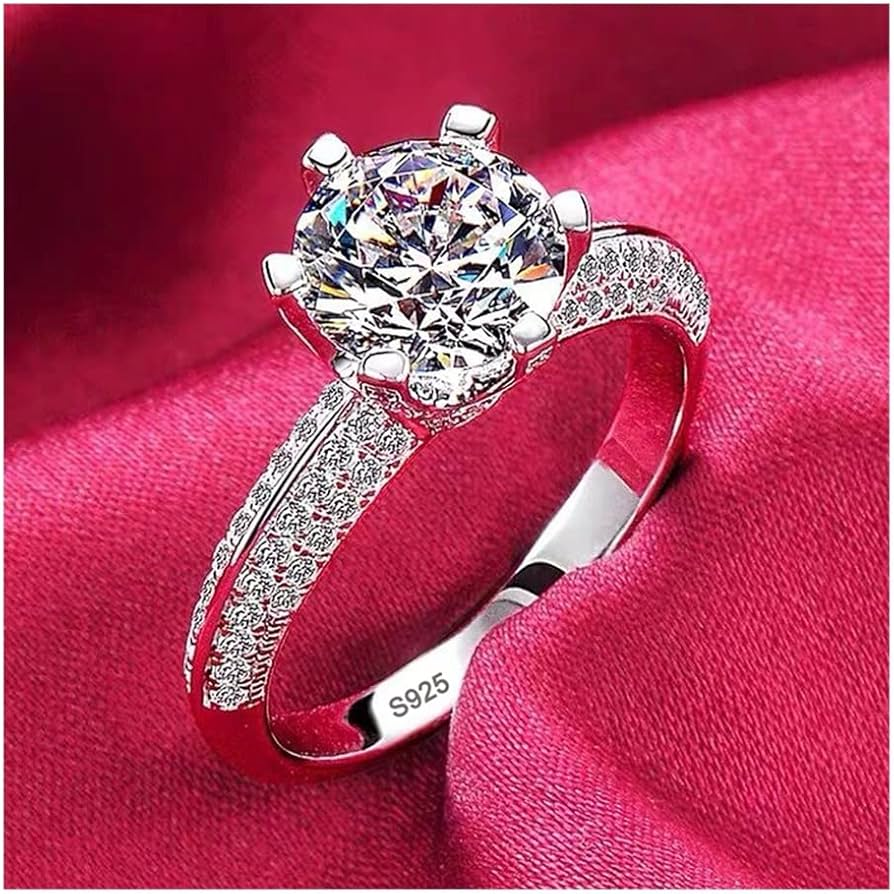
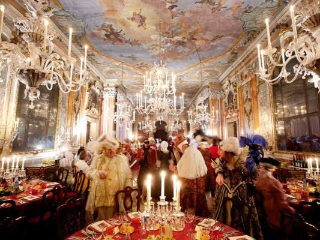

GRAVE LESIÓNDurante el último minuto del juego, una barrida imprudente dejó al mediocampista estrella fuera de la temporada. El cuerpo médico confirma traslado de emergencia al hospital.

INDIGNACIÓNEl silbante central tuvo que salir escoltado por el cuerpo antimotines después de que seguidores radicales rompieran las vallas de seguridad. Se anticipa un veto histórico para el estadio.

CAOS INTERNOTras una fuerte discusión a gritos en el vestidor con la directiva, el estratega declaró: "No me voy a prestar a este circo", dejando el cargo botado a solo dos jornadas de iniciar la liguilla.

¡Paparazzi!Las alertas de boda se encendieron en Europa tras filtrarse imágenes del goleador junto a su pareja evaluando diamantes exclusivos de alta gama.

LA FIESTA DEL AÑOCon una temática estilo casino y una lista de invitados que incluyó cantantes de reggaetón y actores, el festejo paralizó la zona residencial hasta la madrugada.
Sorprendiendo a expertos de la moda, el talentoso jugador presentó su primera colección de ropa urbana premium. Sus compañeros modelaron las piezas principales.